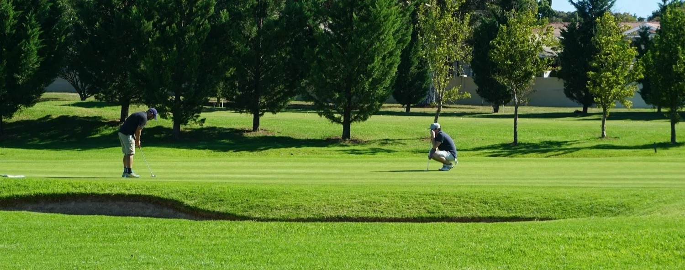

Men connect side-by-side instead of face-to-face. That's not the same as friendship, and it's costing us more than we realize.
February 18, 2026 · Brian Mulligan, LPCC, CAT

You spend four hours in a cart with them every Saturday. You know their handicap index down to the decimal. You know their order at the turn. You know the precise, guttural sound they make when they shank a drive on the 4th hole. You talk about work, Bo Nix's ankle, and the stimp of the greens. Yet if your marriage imploded tomorrow, or if you found yourself standing in the kitchen staring at divorce papers while the coffee maker gurgled indifferently, you wouldn't call a single one of them. This is the "Friendship Recession." For men, it is silent, pervasive, and surprisingly lethal.
Men connect "side-by-side" rather than "face-to-face." We do things. We golf. We fish. We stare at screens in sports bars. We rely on activity-based proximity. This is a distinct phenomenon from actual friendship. As long as there is a task (a distraction like a ball to hit or a fish to catch) we are comfortable.
The problem is that proximity is not intimacy. You can spend twenty years playing golf with a man and remain entirely ignorant of the fact that he is drowning in credit card debt. You might not know he is terrified of his teenage son's addiction. You might miss the hollowness in his career that borders on the necrotic. We mistake camaraderie for friendship. Camaraderie is easy. It requires nothing of you but your physical presence and the occasional grunt of affirmation. Friendship is hard. It requires you to be a human being.
When a buddy asks "How's life?" on the 7th tee box, the script is pre-written. "Good, man. Busy. You?" That script is a survival mechanism. It keeps the game moving. It keeps things "normal." But it also maintains your cortisol levels at a simmer. It keeps your nervous system in a state of chronic, low-grade isolation. In 2023, the Surgeon General flagged loneliness as a health risk comparable to smoking fifteen cigarettes a day. It increases your risk of heart disease, stroke, and dementia. But for men, the risk isn't just medical. It's existential. When you have no outlet for the heavy stuff (fear, grief, inadequacy) it doesn't vanish. It calcifies. It turns into irritability at home. It turns into that third drink on a Tuesday evening. It turns into a shorter fuse with your kids.
You don't need to turn your Saturday round into a group therapy session. You don't need to weep on the 18th green. Please don't. But you do need to audit your circle. Do you have one man you can call when the wheels come off? Just one? If the answer is no, you are statistically likely to die sooner than you should. Next time you’re in the cart, try breaking the script. Instead of complaining about the pace of play, drop a real anchor. "Honestly, work is brutal right now. I feel like I'm barely keeping my head above water." Watch what happens. Most men are starving for permission to be real. You'll be surprised how often your "golf buddy" drops the facade and meets you there. We need the golf. We need the escape. But we also need to know that when the round is over, we aren't walking back to the parking lot alone.
If you're realizing your circle is full of acquaintances but empty of support, let's talk. I help build the skills to turn surface-level chats into conversations that actually matter.